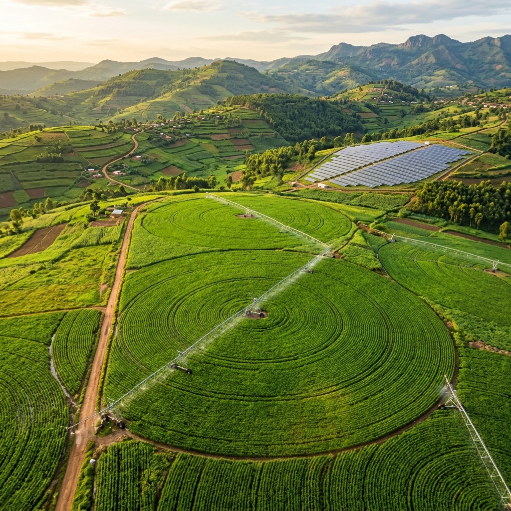

Kirehe District · Rwanda · NISR Data Science Hackathon
Monitor Init…
Mid-Season ML Early Warning · 23-Season (2001–2023) LOYO-CV Validated
Satisfying the Maize WRSI Gap
Fusing 23 historical seasons (2001–2023) of multi-sensor Earth Observation feeds (CHIRPS, MODIS, ERA5-Land) with official NISR SAS 2024 microdata to forecast terminal crop failure 6–10 weeks before harvest across Kirehe District, triggering targeted solar-powered irrigation interventions.
--
Baseline WRSI (Rain-fed)
--
Optimized WRSI (Solar)
2001–23
500m Pixel Corpus

OPERATIONAL SCALE (NASHO NEXUS)
63 Smart Center Pivot Sprinklers
1,173 hectares under 3.3 MW solar power · 2,099 cooperative smallholders.
Sub-Views:
Two ways to explore this dashboard:
1. Drag the environmental sliders below to simulate rainfall deficits and soil moisture stress.
2. Click "Auto-Play Season" above to witness Dekads 4 to 12 unfold automatically.
Seasonal Timeline (Dekads 4–12 · Operational Early Warning Window)
Acquires live NDVI, NDWI, SPI, LST, and precipitation for all 12 Kirehe sectors simultaneously
from Google Earth Engine (MODIS Terra + CHIRPS + MODIS LST). All member profiles are automatically
enriched with live satellite indices for use in Member Analysis and Reporting.
⬤ LIVE GEE CALIBRATION
📅 Reference Period
Ready. Click "Run Spatial Engine" to sync all 12 sectors with Earth Observation feeds.
NDVI · NDWI
MODIS Terra MOD13Q1 — 250 m, 16-day composite.
SPI · RAIN
CHIRPS v2.0 Daily — 5.5 km rainfall anomaly.
LST ANOMALY
MODIS Terra MOD11A2 — 1 km thermal stress in °C.
System Health Narrator · Automated Advisory
Checking Grid Status…
Live Pumping Advisories & Actions
Loading…
AGRIAdapt Physical Nexus Controls
Solar Photovoltaic Generation (3.3 MW Peak)
Available Solar PowerClean pumping yield (MW)
2.8 MW
Center Pivot Distribution & Reservoir
Active Pivot UnitsOperational Sprinklers (Out of 63)
To guarantee Tangible Impact for smallholders without smartphones or internet access, AgriAdapt automatically formats dekadal early-warning advisories in Kinyarwanda for automated SMS broadcast (calibrated with NISR RAHS 2024 farmer registries).
Target Administrative Sector
Simulated Vulnerability:EXTREME RISK (76.5%)
✅ Gateway ready · Africa's Talking API Connected
MTN RW / Airtel 3G100% 🔋
📩 Ubutumwa (SMS Alert in Kinyarwanda):
"AgriAdapt Kirehe Alert: Umurenge wa Mahama uri mu kaga k'amapfa (76.5%). Ubuhehere bw'ubutaka buri munsi ya 35%. Imvura izabura muri Dekad 6–8. Inama: Sasira ibishingwe ku butaka (mulching) kandi witabaze gahunda y'amazi yihuse. Guhamagara Agronome: *105# cyangwa 0788-383-103."
🌐 English Policy Translation:
"AgriAdapt Kirehe Alert: Mahama Sector is at Extreme Drought Risk (76.5%). Root-zone soil moisture is critically low (<35%). Urgent: Apply soil mulching and mobilize emergency supplemental irrigation. Local Agronomist Hotline: *105# / 0788-383-103."
Evaluated under rigorous 23-Fold Leave-One-Year-Out Cross-Validation (LOYO-CV) on 182,390 observations. Achieved AUC-ROC of 0.853, F1-Score of 0.658, and Drought Recall of 0.701 across normal agricultural cycles.
Global Feature Selection (TreeSHAP)
Game-theoretic SHAP attributions confirm that root-zone soil moisture at flowering (Dekad 8) and vegetative emergence (Dekad 4) contribute over 3-fold higher predictive weight than cumulative rainfall alone.
System Architecture & Technical FAQ
1. Where does the smallholder data come from?
Farmer profiles, plot sizes (mean 0.65 ha), and crop yield baselines are grounded in the NISR Seasonal Agriculture Survey (SAS 2024) and Agricultural Household Survey (RAHS 2024), combined with cooperative field logs from the Nasho Solar Irrigation Cooperative (NAICO).
2. How reliable is the mid-season forecast?
The model avoids spatial leakage by training strictly under Leave-One-Year-Out Cross-Validation across 23 historical seasons (2001–2023). It forecasts terminal water stress by Dekad 6 to 8—granting agricultural planners a proven 6 to 10-week operational lead time before harvest.
3. Field Sensor Architecture: LoRaWAN vs Cellular (4G)
For rural ground truth soil sensors, LoRaWAN is chosen over Cellular 4G due to three engineering constraints:
Battery Life: LoRaWAN transmits periodic telemetry and runs 5–8 years on a single AA battery; 4G draws 50x more power.
Network Coverage: A single central gateway covers up to 15 km across Kirehe's undulating hills without relying on patchy cellular towers.
Zero Recurring SIM Fees: Communication utilizes free ISM bands (868 MHz), eliminating monthly SIM data subscriptions for smallholders.
Official NISR Data Attribution & NST2 Alignment
AgriAdapt is designed specifically for the NISR 2026 Big Data Hackathon to demonstrate how national statistical microdata and Earth Observation algorithms combine to power evidence-based policy.
Official NISR Datasets Leveraged
NISR Seasonal Agriculture Survey (SAS 2024 Season B): Calibrates baseline maize yield (1.85 t/ha rain-fed) and fertilizer application rates.
NISR Agriculture Household Survey (RAHS 2024): Provides landholding fragmentation metrics (average 0.65 ha per smallholder).
NISR 5th Population & Housing Census (PHC 2022): Population figures for all 12 sectors of Kirehe District.
NISR / FAO GAUL Boundary Layers: Official 2,640-vertex administrative perimeter of Kirehe.
National Policy Alignment (NST2 & Vision 2050)
National Strategy for Transformation 2 (NST2): Directly addresses Priority Area 1 (Agriculture Modernization & Climate Resilience).
Strategic Plan for Agriculture Transformation (PSTA 5): Supports expanded solar irrigation targets and localized agro-climatic early warning.
Rwanda Green Growth Strategy: Demonstrates zero-emission solar pumping to close smallholder crop water gaps.
AGRIAdapt
Field Analysis & Advisory Certificate · Kirehe District
REFERENCE ID
K-CERT-XXXX
Stakeholder Name
-- --
-- Sector
Plot Area
0.00 ha
-- Crop
Satellite Spectral Observation
NDVI (Vegetation)
0.00
SPI (Rainfall)
0.00
ADVISORY INTERPRETATION
Analysis pending...
ML Performance & Economic Value
WATER SATISFACTION INDEX (WRSI)
0%
ESTIMATED SEASONAL HARVEST VALUE
-- RWF
Generated by AgriAdapt ML Decision Engine. Multi-Sensor LOYO-CV Validated (AUC 0.853). Ground-truthed against NISR SAS 2024 microdata for Kirehe District, Rwanda.